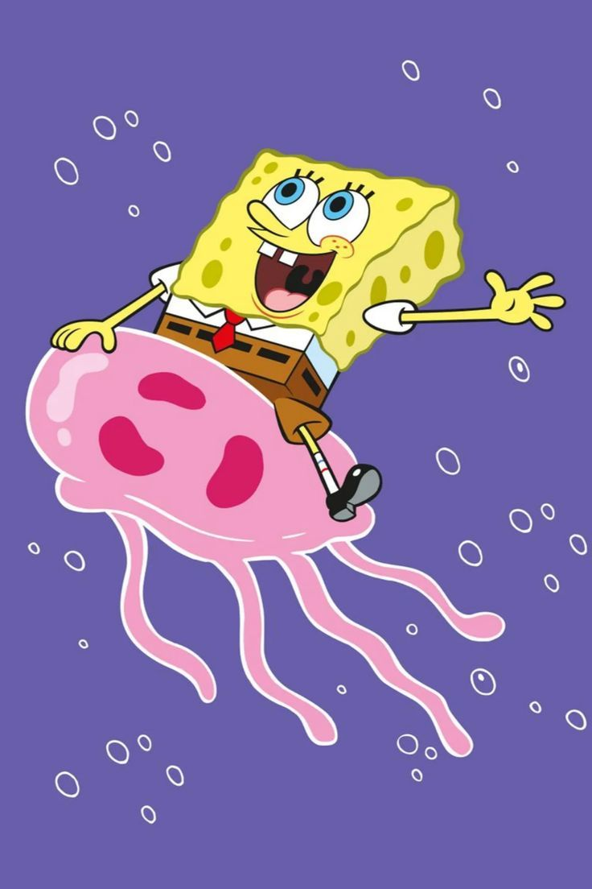

About
Corals are colonial marine invertebrates within the subphylum Anthozoa of the phylum Cnidaria. They typically form compact colonies of many identical individual polyps. Coral species include the important reef builders that inhabit tropical oceans and secrete calcium carbonate to form a hard skeleton.A coral "group" is a colony of very many genetically identical polyps. Each polyp is a sac-like animal typically only a few millimeters in diameter and a few centimeters in height. A set of tentacles surround a central mouth opening. Each polyp excretes an exoskeleton near the base. Over many generations, the colony thus creates a skeleton characteristic of the species which can measure up to several meters in size. Individual colonies grow by asexual reproduction of polyps. Corals also breed sexually by spawning: polyps of the same species release gametes simultaneously overnight, often around a full moon. Fertilized eggs form planulae, a mobile early form of the coral polyp which, when mature, settles to form a new colony.
Although some corals are able to catch plankton and small fish using stinging cells on their tentacles, most corals obtain the majority of their energy and nutrients from photosynthetic unicellular dinoflagellates of the genus Symbiodinium that live within their tissues. These are commonly known as zooxanthellae and give the coral color. Such corals require sunlight and grow in clear, shallow water, typically at depths less than 60 metres (200 feet; 33 fathoms), but corals in the genus Leptoseris have been found as deep as 172 metres (564 feet; 94 fathoms).[1] Corals are major contributors to the physical structure of the coral reefs that develop in tropical and subtropical waters, such as the Great Barrier Reef off the coast of Australia. These corals are increasingly at risk of bleaching events where polyps expel the zooxanthellae in response to stress such as high water temperature or toxins.
Other corals do not rely on zooxanthellae and can live globally in much deeper water, such as the cold-water genus Lophelia which can survive as deep as 3,300 metres (10,800 feet; 1,800 fathoms).[2] Some have been found as far north as the Darwin Mounds, northwest of Cape Wrath, Scotland, and others off the coast of Washington state and the Aleutian Islands.
Taxonomy
The classification of corals has been discussed for millennia, owing to having similarities to both plants and animals. Aristotle's pupil Theophrastus described the red coral, korallion, in his book on stones, implying it was a mineral, but he described it as a deep-sea plant in his Enquiries on Plants, where he also mentions large stony plants that reveal bright flowers when under water in the Gulf of Heroes.[3] Pliny the Elder stated boldly that several sea creatures including sea nettles and sponges "are neither animals nor plants, but are possessed of a third nature (tertia natura)".[4] Petrus Gyllius copied Pliny, introducing the term zoophyta for this third group in his 1535 book On the French and Latin Names of the Fishes of the Marseilles Region; it is popularly but wrongly supposed that Aristotle created the term.[4] Gyllius further noted, following Aristotle, how hard it was to define what was a plant and what was an animal.[4] The Babylonian Talmud refers to coral among a list of types of trees, and the 11th-century French commentator Rashi describes it as "a type of tree (מין עץ) that grows underwater that goes by the (French) name 'coral'."[5]

The Persian polymath Al-Biruni (d.1048) classified sponges and corals as animals, arguing that they respond to touch.[6] Nevertheless, people believed corals to be plants until the eighteenth century when William Herschel used a microscope to establish that coral had the characteristic thin cell membranes of an animal.[7]
Presently, corals are classified as species of animals within the sub-classes Hexacorallia and Octocorallia of the class Anthozoa in the phylum Cnidaria.[8] Hexacorallia includes the stony corals and these groups have polyps that generally have a 6-fold symmetry. Octocorallia includes blue coral and soft corals. Species of Octocorallia have polyps with an eightfold symmetry, with each polyp having eight tentacles and eight mesenteries. The group of corals is paraphyletic because the sea anemones are also in the sub-class Hexacorallia.